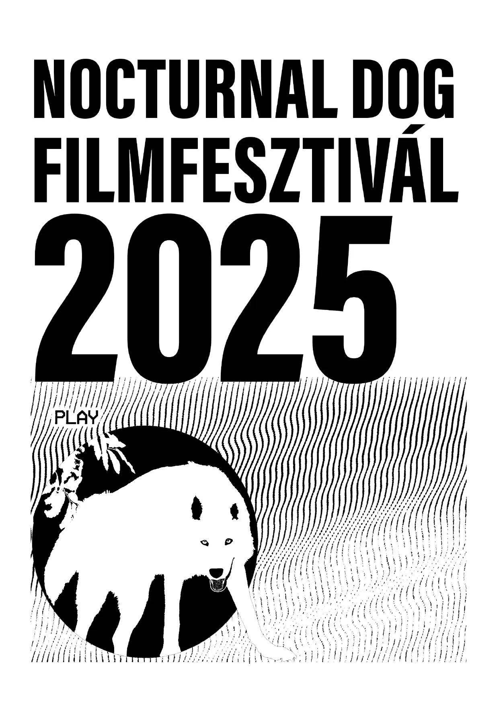

☰
Nocturnal Dog 2025 Booklet
Celebrating 10 years of the Nocturnal Dog film workshop
View Facebook Event
Table of Contents

‹ Prev
1 / 21
Jump
Page 1
Page 2
Page 3
Page 4
Page 5
Page 6
Page 7
Page 8
Page 9
Page 10
Page 11
Page 12
Page 13
Page 14
Page 15
Page 16
Page 17
Page 18
Page 19
Page 20
Page 21
Next ›